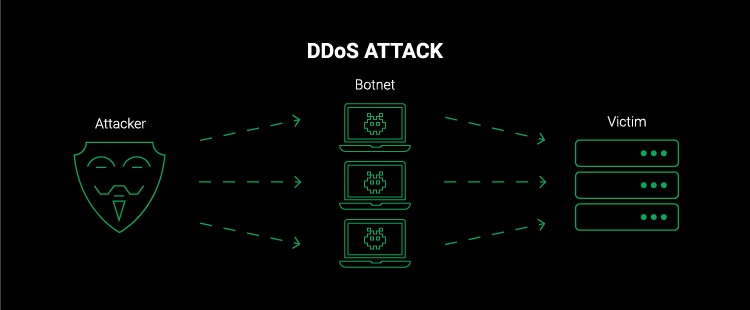
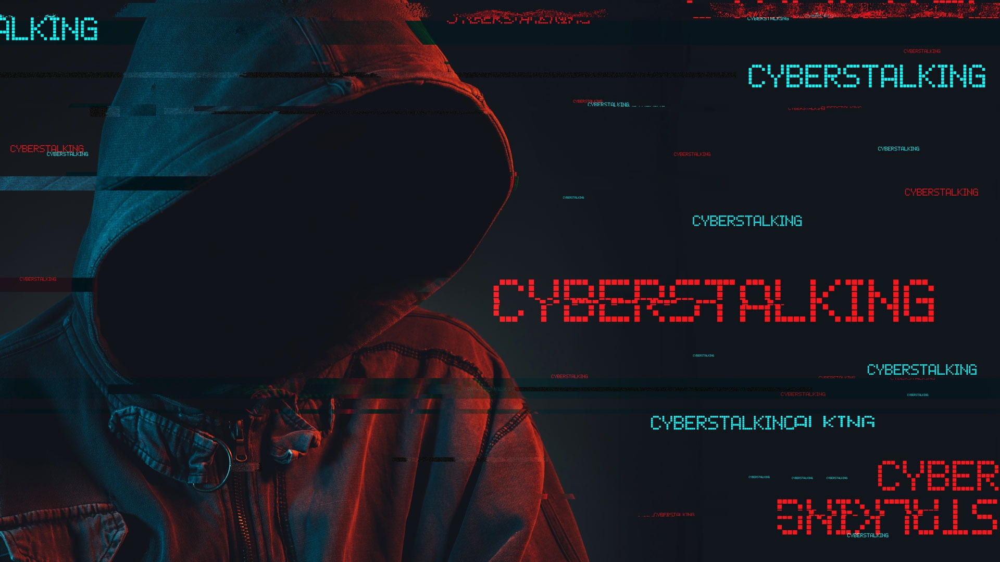
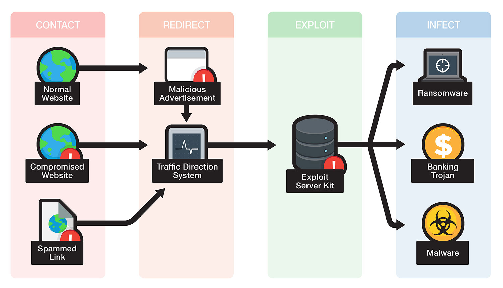

Cybercrimefight.com
Cybercrime is defined as a crime where a computer is the object of the crime or is used
as a tool to commit an offense.
A cybercriminal may use a device to access a user’s personal information, confidential
business information, government information, or disable a device.
It is also a cybercrime to sell or elicit the above information online.
TYPES
DDoS Attacks
These are used to make an online service unavailable and take the network down by overwhelming the site with traffic from a variety of sources. Large networks of infected devices known as Botnets are created by depositing malware on users’ computers. The hacker then hacks into the system once the network is down.
Pups
PUPS or Potentially Unwanted Programs are less threatening than other cybercrimes, but are a type of malware. They uninstall necessary software in your system including search engines and pre-downloaded apps. They can include spyware or adware, so it’s a good idea to install an antivirus software to avoid the malicious download.
Identity Theft
This cybercrime occurs when a criminal gains access to a user’s personal information; to steal funds or participate in a monetary fraud; by finding out user’s passwords through hacking, retrieving information from social media, or sending phishing emails. They can also open a false phone/internet account in your name to fulfill personal gains.
Cyberstalking
This kind of cybercrime involves online harassment where the user is subjected to a plethora of online messages and emails. Typically cyberstalkers use social media, websites and search engines to intimidate a user and instill fear. Usually, the cyberstalker knows their victim and makes the person feel afraid or concerned for their safety.
social engineering

Social engineering involves criminals making direct contact with you usually by phone or email. They want to gain your confidence and usually pose as a customer service agent so you’ll give the necessary information needed. Once they gain access to an account, they can sell your information or secure accounts in your name.
Botnets

Botnets are networks from compromised computers that are controlled externally by remote hackers. The remote hackers then send spam or attack other computers through these botnets. Botnets can also be used to act as malware and perform malicious tasks.
phishing

This type of attack involves hackers sending malicious email attachments or URLs to users to gain access to their accounts or computer. Cybercriminals are becoming more established and many of these emails are not flagged as spam. Users are tricked into emails claiming they need to change their password or update their billing information, giving criminals access.
Illegal Content
This cybercrime involves criminals sharing and distributing inappropriate content that can be considered highly distressing and offensive.This can include sexual activity between adults, videos with intense violent, videos of criminal activity, materials advocating terrorism-related acts and child exploitation material. This type of content exists both on the everyday internet and on the dark web.
online scam

These are usually in the form of ads or spam emails that include promises of rewards or offers of unrealistic amounts of money. Online scams include enticing offers that are “too good to be true” and when clicked on can cause malware to interfere and compromise information.
exploit kits
Exploit kits need a vulnerability in order to gain control of a user’s computer. They are readymade tools criminals can buy online and use against anyone with a computer. The exploit kits are upgraded regularly similar to normal software and are available on dark web hacking forums.